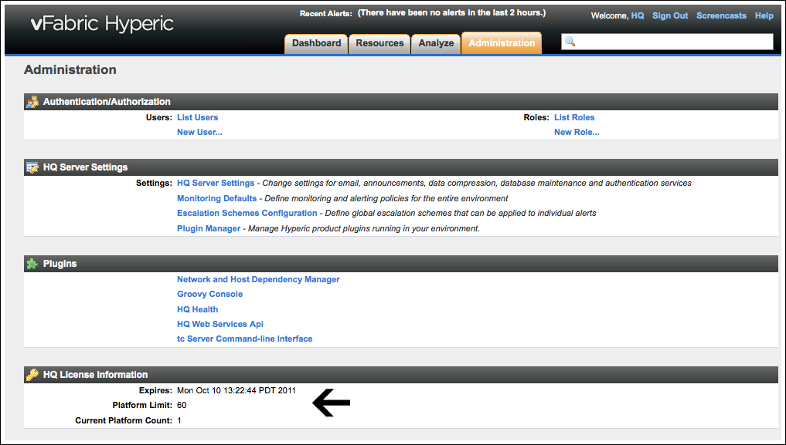

vFabric Hyperic 4.6.5 : Install or Configure vFabric Hyperic License
This page last changed on Jan 04, 2012 by mmcgarry.
License Consumption in vFabric Hyperic
vFabric Hyperic is priced on a per managed platform basis where a platform is:
- A physical machine or a VM with a Hyperic Agent running on it.
- A network device or network host managed remotely by a Hyperic Agent. (Network Device in vFabric Hyperic Resource Configuration and Metrics describes Hyperic functionality for managing remote devices and hosts.)
Install or Configure License
| If you obtain vFabric Hyperic as part of a vFabric Cloud Application Platform package, refer first to the licensing information and procedure in Getting Started with vFabric Cloud Application Platform. If necessary, complete additional licensing tasks in this document. |
vFabric Hyperic evaluation distributions include a time-limited license for 60 platforms.
After you purchase vFabric Hyperic, a production license specifies the the number of platforms you may manage, and unless you have a perpetual license, the license expiration date.
To activate your license:
- Create a file named vf.hyp-serial-numbers.txt that contains the product serial number provided by VMware. Install the serial number file in:
- /etc/opt/vmware/vfabric/ on Unix-like platforms
- %ALLUSERPROFILE%\vmware\vfabric on Windows platforms.
- If you obtained vFabric Hyperic as a part of vFabric Platform, configure the location of the VMware License Server that administers the network license for vFabric Platform, by adding the vfabric.licenseServer.url property to ServerHome/conf/hq-server.conf.
- Restart the Hyperic Server.
You can view your license terms on the HQ License Details section of the Administration tab, as shown in the screenshot below.
vFabric Hyperic sends an email notification of upcoming expiration starting 45 days prior to the expiration date.
